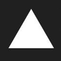

新年伊始，祝星河长明，万事顺遂！
欢迎大家使用XB小报V2.4版本~
在本次大版本更新中，我们隆重推出了XB账号系统，虽然目前仅支持注册，登录等动作，但我们还将以此来开发更多功能，正如本次大版本：沟通无限，我相信账号系统会是大家沟通的一座桥梁。
在这次更新中，由于涉及主页多页面，我们再次重写了首页layout，虽然看起来变化不大，但功能性和稳定性均有一定的提高。
这次更新我们还解决了一些遗留了许久的问题（因为3个多月没更新，发现了很多BUG没有修改），如果大家还发现了BUG，欢迎通过关于页面的联系方式联系我提交BUG~
最后，今天是小年，提前祝大家新年快乐，心想事成~我们下个大版本更新再见~
ZH
2022.1.25
写在最后
感谢大家下载使用XB小报APP！
XB小报官方网站
based on html
powered by
(其实只有ZH一个人)
白色太难看？来，